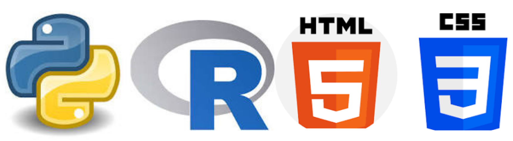
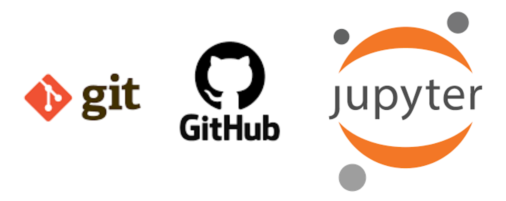

Skills

Programming Languages
- Python
- R
- HTML
- CSS
Querying & Databases
- SQL
- Microsoft SQL Server
- PostgreSQL
- MongoDB

Data Visualization
- Power BI
- Tableau
- QlikView
- Excel
Deployment Frameworks
- Fast API
- Flask
- Streamlit
- Docker

Version Control
- Git
- Github
- Jupyter Notebooks
- JupyterLab
Cloud Platforms
- AWS Cloud
- Google Cloud
Data Science Techniques
Generative AI, Large Language Models (LLM), Machine Learning, ETL, Natural Language Processing (NLP),
Computer Vision, Classification, Time Series Forecasting, Recommendation Engines, Customer Segmentation,
Web Development and Deployment, Web Scaping, Databases, Data mining, visualization, data migration,
data analytics